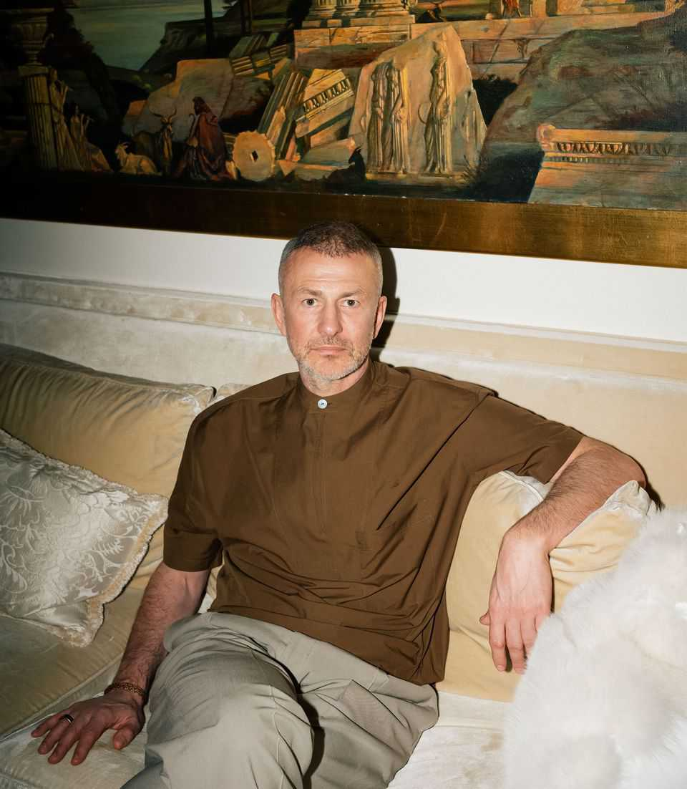
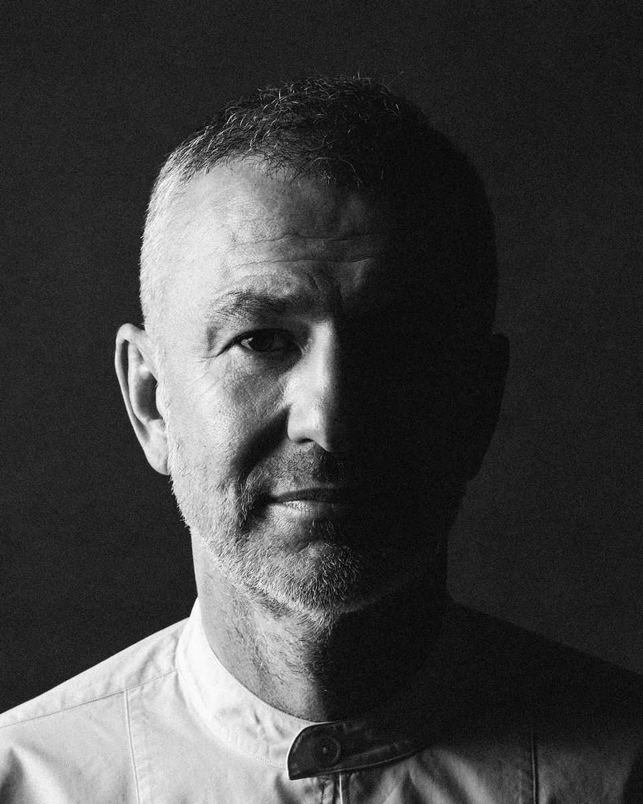
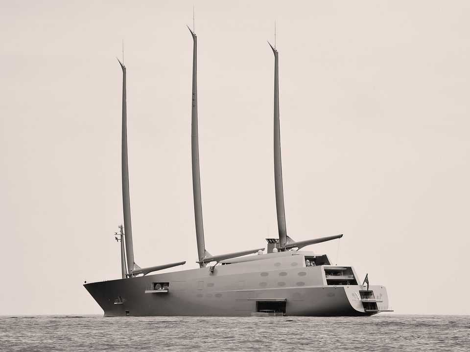
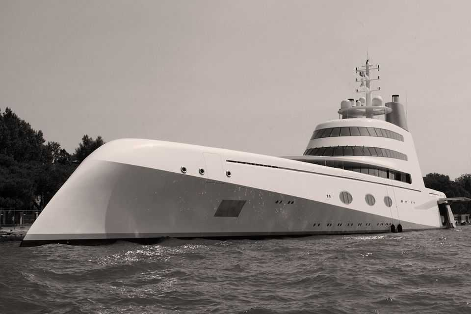
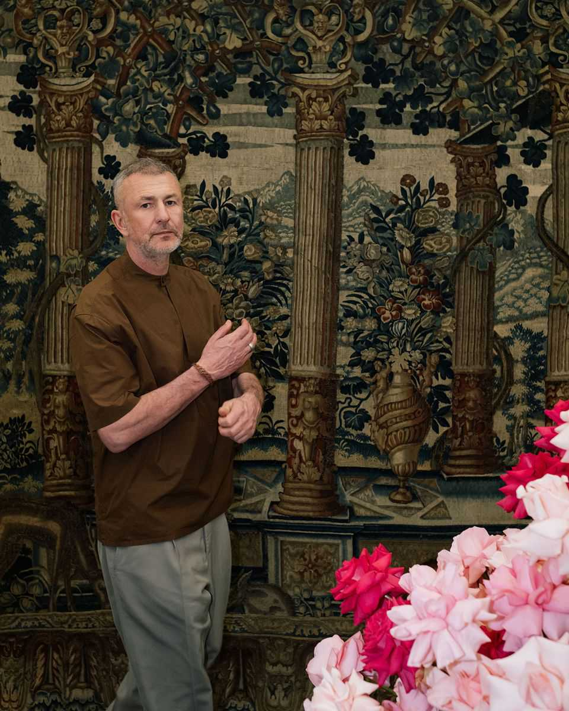

A top oligarch breaks his silence
An interview with Andrey Melnichenko on the future of Russia
July 9th 2026

The clock on the Kremlin tower had already struck midnight on May 28th 2025 when Andrey Melnichenko was finally summoned. The building was largely empty but its most important occupant was still awake. Vladimir Putin greeted his guest and invited Melnichenko to sit beside him, offering him tea. “Move closer, Andrey,” Putin said kindly. Melnichenko’s gaze landed on a red folder which lay in front of Russia’s president—he guessed it was a dossier about him supplied by the security services.
Melnichenko, a slim, tall man with a gawky bearing, is one of Russia’s richest men. He had met Putin before in the company of other Russian businessmen. But this was the first time he had asked to see nachalstvo (“the leadership”) one on one. He began by introducing himself. Over the past 35 years he has built up an industrial empire with vast holdings in fertilisers, mining, energy and logistics. Yet he had always kept a low profile. Even Putin seemed surprised to hear about the scale of Melnichenko’s operations, which account for nearly 1% of Russia’s GDP.
Melnichenko began to talk about his public role, including the brief on climate policy he held with the Russian Union of Industrialists and Entrepreneurs, a club of businessmen. Putin began to lose interest. Melnichenko thought he could read a question in Putin’s eyes: “Why are you here? What do you want from me?”
“Is someone bothering you?” Putin asked.
“Vladimir Vladimirovich, honestly, I understand that people usually come to you for one of two reasons. Either they’re afraid, there’s some problem. Or they want something—a position, a favour…As for fear, of course I’m afraid, 100%, like everyone else. Why deny it? I’m not afraid of anything specific, unless there’s something in your folder. But if there is, please tell me so at least I know what to fear.”
Putin smiled. Melnichenko’s directness had grabbed his attention.
“As for ambition,” Melnichenko continued, “my ambition was to build a global fertiliser company, one of the largest in the world, operating in every market, independent of any one country…I wanted to build a global company simply because it was interesting.”
But then “all this happened”—by which he meant the war with Ukraine, the sanctions, the unpredictability of geopolitics. “The world turned out not to be what I thought. There is no global world. There are no global rules…You understood it before we did.”
Melnichenko, who was placed under sanctions in the first days of the war, told Putin how he was forced to hand his wife ownership of EuroChem, then the world’s second-largest fertiliser firm.
“Who is your wife?” Putin enquired.
“She is a Serb,” Melnichenko told him.
“Well, Serbs are decent, honest people,” Putin said. “They won’t steal it.”
Melnichenko then turned to the purpose of the visit. He wanted to become more involved in public life and to work for the good of his country. The mistake of the elite, Melnichenko told Putin, had been to separate their own fate from the fate of Russia. The supposed guarantee by the West of their property rights had nearly cost them their fortunes. “You cannot have one country for making money and another for security, your family’s future and real life,” said Melnichenko, and thanked the Russian leader for helping him see the light.
Putin was pleased. For years he had warned Russian oligarchs that they were not truly welcome in the West. Now, one of the foremost among them had admitted that he was right. The meeting lasted over an hour, far longer than Melnichenko had expected.
Melnichenko spent just five minutes telling me about his visit to the Kremlin during nearly 60 hours’ worth of conversations we have had over the past three months. He wouldn’t give any more details of the meeting with Putin, but he did share, with startling frankness, the story of his own rise, his diagnosis of the existential challenge that Russia faces and his vision for the country’s future which could change Russian history if he manages to realise it.
He is nothing like most businessmen whose ambition leads them to believe they can run for office. He arrived at our first meeting in Istanbul after a 28-day fast to purify his body and mind. He does not pontificate. Rather, I could see the effort he put into wrestling his thoughts into words, using his entire body to draw them out. He seemed interested in using dialogue to test and shape his ideas.
Melnichenko studied quantum physics at university, and he carries with him the discipline’s seemingly contradictory impulses. He thinks in systems like a physicist. But he thrives on the fundamental uncertainty of the world around him. Each of those traits is useful and together they have propelled him to the top of global business. They may yet equip him to play a role in restructuring Russia and its place in the world.
As we talked, Melnichenko’s ideas took shape. Our conversations inspired him to write an essay laying out his vision of Russia’s future, which The Economist is publishing online this week. At the heart of that vision is the idea of sovereignty—not just of the state but also of the elites and citizens who, under Putin, have been excluded from participation in their country’s politics.

The security establishment sees any independence as a threat. An outsider taking the initiative—a rich businessman no less—may be perceived as a direct challenge. Melnichenko is well aware of the dangers. “Any move beyond silent compliance poses risk,” he told me. “It would be natural to keep one’s head down. But the stakes are too high and if you don’t participate, you exclude yourself from your own future.”
Melnichenko is a latecomer to Russian statecraft. Despite being the richest man in Russia when Putin invaded Ukraine in 2022, he is not a household name inside or outside the country. For the past 20 years, he has treated Russia as a foreign investor would, flying in for a few weeks a year to inspect his businesses. The rest of the time he either lived in Switzerland or cruised round the world on his yacht. This was partly because he wanted to live like other international billionaires. He has cultivated relationships with tech titans such as Larry Ellison, the leaders of the UAE and the court of Muhammad bin Salman, the crown prince of Saudi Arabia.
But it’s also because of the agreement Putin struck with the oligarchs when he came to power: stay out of politics and you can keep your fortunes and enjoy your life abroad. The country was instead dominated by the siloviki, alumni of the security services.
When Putin invaded Ukraine, the world waited for Russia’s rich and powerful to speak against the war. But they stayed quiet. The West imposed sanctions on them, partly to make them apply pressure on Putin. But this betrayed a lack of understanding of how power worked in Russia—the business elite had long given up trying to influence politics.
Putin himself was worried the oligarchs would betray him. Instead sanctions pushed them back into his embrace. Yet when they returned, they repatriated their interests and ambitions along with their money. Melnichenko’s opening gambit when our conversations began three months ago was: “For the first time I feel I have no other country but Russia.” Given the reticence of his peers, it is astonishing that Russia’s most enigmatic oligarch, while living in Moscow, is willing to put his head above the parapet and lay his views on the record.
Melnichenko is not a dissident. He is neither an anti-war hero nor a pro-war zealot. The businesses he runs help sustain the war economy. Ammonia produced by his plants is used in munitions. He works with the armed forces to defend his factories from drone attacks and co-operates with the security services to avert sabotage. He avoids ideological and moral judgments, because he thinks they are a distraction from the task of designing a system that works.
He is not seeking to challenge the existing power structure. Rather, he is offering his services to the government and hopes to become an architect of change. The course of his career suggests that he is not interested in wielding direct control. He served as a non-executive director on the boards of his companies, at times allowing his chief executives to overrule him. His skill has been in bringing together disparate interests to construct systems that transform natural resources: building ports and railways, synthesising fertiliser, generating electricity. Hard-won mastery over the physical world, he believes, gives him a clear-eyed perspective that ideologues lack.
The war with Ukraine has now gone on longer than Russia’s involvement in the second world war. Melnichenko is stepping up as Moscow finds itself under military assault for the first time since 1942. Ukraine’s attacks on Russia’s refineries has caused a massive fuel shortage. Drones are striking industrial and military facilities deep inside Russia, stripping the Kremlin of its aura of invincibility. The economy is under strain. For some time, elites have felt that the country has reached a tupik—a dead end. Now, the arrival of war on the home front has added a fresh layer of discontent.
This means the conflict may escalate dangerously. “The war in Ukraine is unequivocally seen as a war between Russia and the West,” said Melnichenko. He thinks there is a worryingly high chance that it will spill over into other countries. He does not rule out the use of nuclear weapons. That is an outcome he is desperate to avoid. “Whatever the reasons that brought us here—whether these people were right or those people were wrong—we have to recognise the reality: we’re now in uncharted territory.”
Melnichenko is not scared of chaos—he sees it as a laboratory to test himself as a builder of systems. His fortune was created as modern Russia emerged from the carcass of the Soviet Union. He has always been a step ahead of change, identifying value which is underpriced. Today there is a heightened demand for order, predictability and an idea of a future. “People are not afraid of freedom. People are afraid of chaos,” Melnichenko said. From the outside, the regime seems impregnable. Yet that had also seemed the case in 1913 and in 1986. Those governments fell a few years later.
It is important to understand Melnichenko’s story for two reasons: first, because he is likely to become a force who cannot be ignored; second, it shows him to be a meticulous strategist, who plans patiently and acts decisively. So far, he has always got what he wants.
Melnichenko was born in 1972 in Gomel, the second-largest city in Belarus, into a family of Soviet intelligentsia. His father was a physicist and a semi-professional basketball player; his mother, an ethnic Ukrainian, taught Russian language and literature in a local music school.

In the spring of 1986, when Melnichenko was 14, the nuclear plant blew up in Chernobyl, 160km from Gomel. He experienced Chernobyl as both a catastrophe and a liberation. He and his classmates were evacuated to an empty military base in Lithuania that had recently stored short-range nuclear missiles. “It was the freest and most interesting summer of my childhood: no parents, no school supervision, total freedom. You could crawl through missile silos, many of them not sealed up yet, wander through underground passages: it was risky, exciting and girls liked it.”
Chernobyl was also a catalyst of glasnost (openness) in the Soviet Union. As attempts to conceal the scale of the disaster failed, the pervasive culture of secrecy and fear began to melt away. Magazines started to publish previously banned writing about Stalin’s repressions, “I watched teachers quite literally rewrite their interpretation of history on the fly.” Foreigners and goods were starting to trickle over the Soviet border. As a teenager, Melnichenko would buy Western clothes and electronics from Poles and Hungarians and sell them in street markets in Gomel.
Melnichenko was clever and placed in a stream for advanced maths and physics. At 15 he went to the leading Soviet school for mathematics, which was attached to Moscow State University (MSU). Unlike most other parts of the Soviet education system, it was genuinely meritocratic. Students who did well, like Melnichenko, studied physics at MSU. Others trained as cryptographers at the KGB academy.
His studies at MSU shaped Melnichenko’s perception of the world. He specialised in quantum statistics and field theory, which deals with sub-atomic particles and their behaviour. “In the quantum world, nothing is certain and everything is probable. Reality is fluid,” he explained. “If something disproves your view of life—some event, phenomenon, whatever—it is not a tragedy, it is an opportunity. I’m not rigid. Tomorrow I may believe something different from what I believed the day before yesterday.” This mentality was perfect for a country in upheaval.
In the spring of 1989 he attended political rallies and rock concerts by Western bands such as the Scorpions, whose song “Winds of Change” became an anthem of freedom. He and a friend bought tickets for Pink Floyd’s gigs via employees at theatre box offices—prices were still set by the state—and resold them through a network of students at a huge mark-up.
At MSU, Melnichenko met a woman called Larisa, his first love. “She was beautiful, intelligent and she was five years older.” Larisa had studied music and sang jazz. Though he was certain she loved him back, Larisa suddenly disappeared in the spring of 1990. Later, one of her friends told Melnichenko that she had married a rich Muscovite and was expecting a child.
He was devastated but there was a twist in the tale. “Two years after her wedding, I met Larisa again. By then I was a different person. I had money, status, confidence.” He resumed the relationship—but only because he wanted to hurt her. Melnichenko got his revenge. “It was probably the most shameful thing I did in those years, and I can find no justification for it.”
The story of Larisa taught him two lessons: revenge, however tempting it may be, humiliates the perpetrator more than the target. The second was that Moscow was obsessed with money.
The collapse of the command economy and rapid impoverishment of the population created an enormous appetite for magic shows and gambling as people sought a miracle. Card games, shell games and lotteries, run by con artists, sprung up everywhere. Melnichenko and a friend sensed an opportunity. “We observed it, rationalised parts of it, simplified it rather cynically, and basically made it efficient.” Melnichenko’s game favoured the house, but it did allow people to win—he realised that for the business to endure he needed his customers to share in the benefits.
The game was simple. The player drew ten sticks from a set of 60. Each stick was marked with a number from one to ten, and the total was then checked against a payout table to determine whether they had won. “We made sure our operators stuck to the rules. The hope we were selling was genuine.” This increased the game’s popularity, even though “I understood who was profiting from whom.”
To avoid getting shut down, Melnichenko needed to square the authorities. He acquired permits to operate the lottery by pretending it was a charitable foundation. (Later it was registered as a charity—the cause supported was named as “strengthening relationships with those who issued permits”.)
A far bigger problem was thugs shaking down businesses. To prevent this “injustice”, Melnichenko relied on a friend whose father headed a police academy in Volgograd. “Why negotiate with gangsters when there are plenty of half-trained policemen around?” Hiring them made paying off a protection racket unnecessary and the cops also helped to manage the crowd “which may become disappointed with its financial result and punch you in the face”.
Through his business, Melnichenko acquired a network that has risen along with him. Many of the MSU students who operated the lottery became government officials and businessmen who are still in his orbit. The police cadets now occupy senior positions in the security services.


Melnichenko got another student to manage day-to-day operations while he went to lectures and “thought about things”. This was the role he has always preferred. “I was always a leader but almost never in the foreground.” His low-key style was honed at the summer camps he had attended as a child, where the strongest boys were the most popular. “The moment you try to advance your own agenda, however admirable it may be, you inevitably provoke the desire of some less reflective but physically stronger boy…to punch you in the eye.”
He learned how to be diplomatic. “I have never liked violence as a way of achieving an objective. The best option is to attract people by proposing objectives they either had not seen themselves or did not believe were attainable.”
By the end of his first year of university, Melnichenko was driving a Lada. By the end of his second year, he had upgraded to a Mercedes. He had 40 lottery stands operating across Moscow. The lottery generated a steady flow of roubles, but these were losing value by the day as inflation shot up. He converted his earnings into dollars—then an activity that was still illegal outside official channels. He obtained these through Chinese and American students who had access to greenbacks through expat connections. These contacts turned into friendships—one became a senior official in the Chinese government and his son heads Melnichenko’s Shanghai office. The American became a congressman. Any excess dollars he had were sold to other aspiring entrepreneurs. He opened his first informal currency exchange in a dorm room at MSU.
Melnichenko spent the summer of 1991 in Crimea. Not far away, Mikhail Gorbachev was being detained by the KGB in a last-ditch attempt to preserve the Soviet Union. Melnichenko sensed that these were the death throes. He felt “neither fear nor euphoria—just a sense of an inevitable process accelerating”.
When he returned to Moscow, he did something unthinkable a few weeks earlier. Betting that the old system was hollow, he advertised his illegal foreign-currency exchange in a newspaper. The risk paid off and the business grew rapidly. He finally dropped out of university and folded the lottery.
What he wanted now was to make his operations official—not easy if you’re a 20-year-old without government connections. What he did have, though, was chutzpah and a knack for winning the trust of older men of his grandfather’s generation. He had two guardian angels. One was David Kruk, a 70-year-old war veteran who ran Premier, a co-operative bank. Melnichenko found him through the yellow pages and made Kruk an offer. Premier would receive a fixed fee for bringing his exchanges under its roof; any additional profits would be kept off the books.
After six months Melnichenko poached Kruk’s staff and set up on his own, but he managed to stay friends with his mentor until Kruk’s death at the age of 96. He called the new bank Moskovsky Delovoy Mir (Moscow Business World, or MDM for short).
Meanwhile, Russian politics was breaking down. In 1993 the country suffered a constitutional crisis when communists and ultra-nationalists led an insurgency against Boris Yeltsin, the president. There was shooting on the streets. Melnichenko picked up a gun and headed out—not to get involved but to observe.
To consolidate his position in foreign-currency dealing, Melnichenko needed to find a regular supplier of dollars. His other guardian angel was an American banker called Richard Spikerman, the head of international relationships at the Republic National Bank of New York, the main importer of American bank notes into Russia.
Melnichenko won him over. “We stood outside in the snow and grilled steaks. I was 60. He was 22. He reminded me of my son,” said Spikerman, who worked with him up until last year. Now Melnichenko had a direct line that bypassed the official Russian exchanges.
Republic National would fly up to $300m-worth of notes a day from vaults in Europe to Moscow. Melnichenko arranged the transport and security for his share. He rented a disused nuclear shelter near Moscow for storage. Trucks drove two storeys underground, where dozens of people sat counting cash.
“Russia in the 1990s was an engine of acceleration: it destroyed people and created them at the same pace,” Melnichenko said. Rules were flexible and success or failure depended on one’s agility. “If you could think a little faster than others and formulate things a little better, things worked out for you.”
In 1992 the government began the biggest privatisation in history. Many of Melnichenko’s friends became owners of companies that were previously state-owned; he served as their banker. His big clients included the Chernoy brothers, who assembled a metals empire with the help of political connections and underworld muscle. The turf war they fought over Russia’s aluminium left hundreds dead in the smelter cities of Siberia.
In 1996 the Chernoy brothers’ empire fell. They were succeeded by a select group of tycoons, who were handed control of Russia’s natural resources by Yeltsin’s government in return for political support. After Yeltsin’s re-election in 1996, Boris Berezovsky, one of the most prominent of these oligarchs, declared, “now we have the right to occupy government posts and enjoy the fruits of our victory.” Melnichenko was not of their number. He observed from the side, as they scrapped with each other to expand their personal fiefs instead of investing their wealth and energies in improving the public realm.

In 1998 Russia defaulted on its debt and devalued the rouble. Many of the oligarchs were exposed and lost vast sums of money. Melnichenko, who had converted his earnings into foreign currency, came away not just unscathed but stronger. As other Russian banks went under, he scooped up some of the country’s biggest firms as clients. One of these was owned by Roman Abramovich, who had worked his way into Yeltsin’s inner circle. “He made a big impression on me. For the first time, I saw a strategist—disciplined, patient and systematic.”
Melnichenko “came to understand how power in Russia really worked”. It did not derive from official positions of authority, he realised, but ran through informal networks, where only trust and loyalty mattered. Melnichenko saw how Abramovich had built up contacts everywhere—from regional governors to Yeltsin’s family—and wielded influence without displays of dominance. “People who made up his ‘collective’ did not realise they were part of a single plan…that existed in his head. Abramovich seemed to be nowhere, yet soon he was everywhere. From a certain moment”, around spring 1999, “there were no oligarchs in Russia. There was just Abramovich.”
Melnichenko did not want to be part of someone else’s system, nor was he interested in politics. Instead, he wanted to create an industrial empire. In 1999 he hired Alexander Mamut, a plugged-in figure, as chairman of his bank. “Within a year I got to know absolutely everyone who one needed to know.”
Abramovich was instrumental in managing the transition from Yeltsin to Putin. Melnichenko also recognised this marked the end of an era. He offered hundreds of thousands of dollars to lure opposition candidates to Putin’s party and received a letter of gratitude from Putin himself after he was elected president in 2000.
Early that year Melnichenko went to the Himalayas. “I wanted to think everything through, calmly.” He had money, political connections and a clear goal: to consolidate some of the largest industrial resources in the country. He had his eye on three sectors: making metal pipes, making fertiliser and mining coal. “Everything was part of a unified strategy.”
Each target was, on the face of it, unpromising. Export prices for Russia’s commodities were in the basement, agriculture was in a dire state and domestic tariffs for electricity and gas were set artificially low. Many domestic consumers simply did not pay at all, safe in the knowledge that they would not be cut off.
But Melnichenko had a hypothesis: that China’s economic growth would create new demand for coal, and require food from North and South America, which would therefore need fertilisers. Internal reforms would establish fair energy tariffs, and consumers would begin paying in full. Rising oil and gas prices would create domestic demand for pipes. And scrap metal, the raw material for making them, was cheap and plentiful.
Melnichenko started with coal: sweeping up undervalued mines, and connecting them to railway hubs, ports and power generators. In the east of the country, he built an export terminal at the end of an underutilised railway line—a 2,700-mile-long (4,345km) Soviet mega-project that ran from Siberia to the Pacific.
The main consumers of coal inside the country were electricity producers. Anatoly Chubais, the architect of privatisation, had been appointed in 1998 as head of RAO UES, the electricity monopoly, with a mission to break up one of the last remaining pillars of the centralised economy and promote competition. Melnichenko paid a call to introduce himself. “I believe that your reform will work out,” he told him.
Chubais was used to dealing with bolshy minority shareholders or oligarchs demanding favours. The man visiting him was so polite that “he looked like a schoolboy walking into the staff room during break,” Chubais recalled. There was one more thing, Melnichenko added. “We raised $2.5bn and we bought 15% of your shares.”
Chubais was so stunned he thought he had misheard. This would make Melnichenko the largest individual investor in RAO UES. Chubais waited for the new owner’s demands. None came. As Melnichenko prepared to leave, Chubais could not help asking: “Why did you come, Andrey? Do you have any wishes?” “No, I just came to inform you,” Melnichenko replied. Then he left. For the next seven years, he did not make a single request. “It was my dream come true,” Chubais said. “He was a new kind of industrialist.”
It took just two years for Melnichenko, whose name had previously been barely known outside business circles, to emerge as one of Russia’s top industrialists. “Everything was done very quickly. And nobody could understand what we were doing. Only once everything was finished did it become clear.” In 2002 Nezavisimaya Gazeta, a Russian newspaper, quoted one Western businessman who said of Melnichenko, “He’s 30 years old, and he wants to rule the world.”
By 2004 his plan was complete. MDM Group had merged 50 enterprises into three companies: the Pipe Metallurgical Company (TMK), EuroChem, a mineral and chemical company, and the Siberian Coal Energy Company (SUEK). The power plants served Russia, his coal exports were sent to Asia and EuroChem looked West. He had, as his old friend Spikerman said, become “a globalist by design”.


While Melnichenko was consolidating his industrial assets, Putin and the security services were establishing control over the elites and eliminating independent power bases. The new leader sidelined most of the oligarchs. In 2003 he arrested Mikhail Khodorkovsky, the politically ambitious owner of Yukos, Russia’s largest oil firm, and seized his company.
Moguls were told that “you don’t need to be involved in anything other than your business,” Melnichenko recalled. “In fact, you are explicitly expected not to be involved.” He did not mind this arrangement and neither did his peers. By the early 2000s they were looking outwards. “The same impulse that had once led me from Gomel to Moscow was now pushing me to New York, London and Paris,” said Melnichenko.
Part of this shift was his decision to get married. He approached his personal life as systematically and deliberately as his business affairs—like “Chinese dynasties. There was no randomness in it, absolutely none.” He chose his future wife before he actually met her.
Aleksandra Nikolić, known as Sandra, was five years younger than him. She had been raised in the former Yugoslavia. Her father was a Serbian architect, her mother a Croatian artist. As the most popular singer in the Balkans and a model with a degree in international management, she was beautiful, famous and clever. She was also his entré into European society.
At their first meeting in Antibes, Melnichenko told her straight away he was planning to marry her. She was taken aback, but he was confident. “The moment I saw her, I knew that everything I’d heard about her before was true—and much more besides. I fell in love with her immediately.”
Six months later they moved in together and, two years after that, they got married. The wedding cost $30m. The 300 guests were fed by Alain Ducasse, a Michelin-starred chef, and entertained by Whitney Houston, Christina Aguilera and Enrique Iglesias.
By the time of their wedding, Melnichenko was no longer a Russian tax resident. In 2004 he moved to France, and later to Switzerland, and stepped back from the day-to-day operations of his companies. A life apart suited him. “I had worked very hard, essentially, since childhood. I just wanted to live…I had no interest in improving the world, let’s put it that way.”
Until then his knowledge of Western business was mostly theoretical. There was only one way to turn it into practice: “start living the way the people you aspire to become actually live, spend time how they spend it, see how decisions are really made.”
Melnichenko commissioned a yacht from the designer Philippe Starck, whom he gave complete freedom. It was 119 metres long and weighed 6,000 tonnes. The prow was shaped like the beak of an eagle and it glided stealthily through the sea with barely a ripple, “like a whale”. The boat, called A after his and his wife’s shared initial, set sail in 2008. It served as his calling card and an expression of life unconstrained by borders or nationality. He surveyed the globe, spending eight months a year on board. “We were building a global Russia integrated into the world economy and Western institutions.”
From the deck of his yacht he began devising a global investment strategy. In 2011 he conceived a plan to spend $35bn over 15 years, picking up assets across the world, and building new plants in Russia. “I did not receive much in the way of dividends, I was investing in the long term.” The plan succeeded—but the world for which it was made would fall apart.
Two conflicting tendencies began to emerge inside Russia in 2008, the year that Putin took a four-year hiatus as president. Following years of growth and high oil prices, the country was modernising socially and economically. The first post-Soviet generation was coming of age. They wished to be citizens rather than subjects and were receptive to international influences.
But Putin, who continued to wield power as prime minister, realised integration with the West would upend Russia’s political system. This would undermine his power and that of the siloviki, and his desire to recreate the Soviet empire by asserting a Russian sphere of influence. His return to the Kremlin in 2012 was greeted with mass protests by Russia’s middle class. At that point he made a deliberate choice to set the country on a path of confrontation.
While Melnichenko was expanding his horizons, Putin began to isolate Russia and restore the symbols of empire. None was more potent than Crimea, which he annexed in 2014. Sanctions followed as Putin began to turn Russia into a fortress—self-reliant, hardened against pressure, its population on a leash.
That year Melnichenko moved the headquarters of EuroChem to Switzerland, where he lived. He did not recognise the magnitude of the tensions between Russia and the West. He saw crises in business terms, where matters are resolved when the costs grow too high. “I didn’t think it would go as far as it did. It shouldn’t have gone that far.” Melnichenko now sees his error. “While I was continuing to build an international company, the world in which such companies could exist was already coming to an end.”

Then in 2022 his world imploded. On the day that war broke out, Melnichenko was in Moscow to attend a long-scheduled engagement with Putin, alongside other Russian business leaders. Putin projected confidence. “Unfortunately, our meeting is taking place in unusual conditions, to put it mildly, but we planned it in advance,” he told the stunned gathering. None of those present had expected the Russian president to pull the trigger. They had persuaded themselves that war couldn’t happen because it would be a disaster. Nonetheless, none of them spoke against it.
Melnichenko was put under sanctions on March 9th. The EU claimed that this was because he was part of “the closest circle of Vladimir Putin”. EuroChem itself was exempted from sanctions, so as not to endanger the world’s food supply. Melnichenko later challenged the sanctions in the European Court of Justice, but his arguments were dismissed.
He had already taken countermeasures. On March 8th, his 50th birthday, he resigned as the beneficiary of the trusts that held assets used by the family—houses, planes, yachts—and transferred them to Sandra, an EU citizen who had never lived in Russia and had no Russian passport. A few days later the Italian government seized his newest yacht. The EU bureaucracy was not his only source of trouble. Business partners in Europe tried to exploit his predicament, he says.
Melnichenko’s initial strategy was to sit out the war and wait for things to return to normal. “There was a period in 2022-23 when I tried to play by the old rules because it seemed to me that this whole story was temporary.” He based himself in Dubai and made friends with the Emirati elite. The tipping point came in a conversation with Tucker Carlson, then a MAGA tribune, in a hotel in Dubai in the build-up to the 2024 American election. “It left me with a clear impression that if Trump wins, he would embrace fragmentation.”
At around that time he and other businessmen realised that the war would not end soon. With no reprieve from sanctions in sight, they started to repatriate themselves back to Russia, where they faced a different kind of threat to their assets.
Property rights in Russia had always been conditional. But the war unleashed a rapacity that hadn’t been seen for decades. Since 2023, assets worth $60bn have been nationalised or handed over to loyalists. It was the biggest redistribution of property since the mass privatisations of the 1990s.
In August 2023 prosecutors sought to confiscate Sibeco, a Siberian power plant, from Melnichenko, arguing that his purchase of it had involved fraudulent collusion with the previous owner. Two weeks later, the prosecutor-general’s office backed down in return for Melnichenko making a donation to a “charitable organisation”. According to people familiar with the settlement, the sum was 32bn roubles ($335m)—the same amount that Melnichenko had originally paid for Sibeco. The charitable organisation was Sirius, a school for gifted children favoured by Putin.
Melnichenko now knew that he needed to establish property rights in Russia. The only way to do this was to work his way into the system, understand the competing interests and help shape its objectives. “If you want a seat at the table, you have to do something.”
As always he began by observation. “In 2023 I started to spend more time in Russia and was getting to know it in a much deeper way.” He talked to anyone who had a stake and a viewpoint: “politicians, journalists, thinkers, liberals, nationalists, communists”. He could be found having breakfast with Dmitry Muratov, the Nobel prizewinner and founding editor of Novaya Gazeta, a liberal newspaper, who was ostracised by the government and branded a “foreign agent”. In the evening he might have tea with Alexander Dugin, a nationalist philosopher who glorifies the war.
Conversation by conversation, he found a way to imagine what Russia ought to become. “Everybody has different interests, but there is a consensus that a clear idea of the future has been lost.” To much of the world, no serious discussion of Russia’s future is possible until after the war. To Melnichenko, the end of the war in Ukraine is contingent on imagining that future—which hardly anyone in either Russia or the West is prepared to do.
Melnichenko’s vision is set out in his online essay. It is not ideological. He does not think in terms of democracy and autocracy, good and evil, friend and enemy, defeat and victory. His most important goals are building consensus, restoring stability and working for Russia’s long-term interests.
He explained to me four scenarios, all of which he thinks are grim. In the first, Russia is brought in from the cold and reintegrated into the Western order while being confined to its periphery. To Melnichenko that sounds like vassalage; he thinks a humiliated and defeated Russia would almost certainly generate aggressive revanchism.
A second is for Russia to be permanently drawn into China’s orbit as a buffer zone and supplier of natural resources. China may have little interest in this scenario: it would be responsible for Russia’s problems and face a backlash from humiliated Russians. “China is happy to benefit from asymmetry in the relationship but is in no hurry to formalise it,” he argues. To him, the only difference between these two scenarios is the identity of the feudal overlord.

The two other scenarios are more alarming for being entirely plausible. Russia could descend into civil conflict with different warlords vying for scarce resources. A fragmenting country with a nuclear arsenal was America’s worst nightmare when the Soviet Union collapsed and it remains so today. “A broken Russia may be an attractive image in political speeches,” Melnichenko says. “It is far less attractive from the standpoint of risk management.”
The fourth scenario, promoted by the security services and subject to serious discussion in the Kremlin, poses a direct threat to Melnichenko and the Russian elite: a North Korea-style lockdown sustained by militarism, repression, isolation, rationing and the export of instability. “A Russia trapped in the mentality of a permanent fortress would transform external confrontation into a permanent instrument of domestic politics,” he says.
The only alternative to these scenarios, as Melnichenko sees it, is for Russia to become what he calls a “sovereign” country, one that places the comfort of its people first and whose behaviour is predictable to the outside world. The word “sovereignty” has had varying meanings in Russian politics over the past three decades. Yeltsin invoked sovereignty to show that the new democratic country was distinct from the Soviet Union. One astute Russian philologist thought the idea was absurd. “Who is Russia seeking sovereignty from, the polar bears?” she wrote in her diary.
Putin, who argued that modern Russia shared characteristics with the Soviet Union and the Russian empire before it, invoked sovereignty to justify the domination of the state over its people. Sovereignty became a synonym for Russia’s resurgence as a great power—one opposed to the Western liberal order. It was also a byword for Putin’s personal rule and his right to impose his will on former Soviet republics.
Melnichenko uses the word “sovereignty” differently: to refer to the agency of the elites with a stake in the country. Citizens too “may come to understand the importance of agency as well—provided they are offered not a simulation of participation but an opportunity to discuss real alternatives honestly”. A country’s greatness, Melnichenko argues, has nothing to do with sloganeering. It depends on whether it protects citizens’ freedom and property “not as an act of good will but as an obligation”.
Melnichenko is convinced that the challenges that Russia faces are so severe that wider participation is needed. Businessmen, leaders of civil society, nationalists, technocrats ought to get involved. These people have different, sometimes opposing interests but would agree on a compromise not because they like each other, but because alternatives would be worse. Such a polity would be an oligarchy in the classical sense of the word—rule by elites. The “internal debate about what Russia should become is unavoidable—and it will be intense.”
The main aim is to make the country “a place where people are drawn to because they genuinely like it, because life there is better: safer, more secure, more predictable, more prosperous—and because they feel they can realise themselves.” For Melnichenko, attracting people from former Soviet republics and tempting back those who fled the country is the only way of making Russia economically viable.
This vision is strikingly close to the one advocated by Tsar Fedor Ioannovich—the son of Ivan the Terrible and the titular hero in one of Russia’s most popular history plays: “We should make Russia so pleasant that people would not prefer living abroad. Then there will be no reason for them running away from us.”
“This Russia does not have to be convenient to the West or to China,” Melnichenko argues. “It has to care primarily about its own citizens and be predictable and rational to the outside world. It might be a difficult partner to the West, but it is not a black hole. It might be less amenable to China than a client state, but it is safer than a large and volatile vassal.”
His proposals are self-serving, obviously. He clearly wants Russia to become a place where there is a role for him. If the country turns into North Korea, his children will not have a future there. If it descends into civil war, his fortune will not survive.
It is far too early to say if Melnichenko’s idea of Russia’s sovereignty can become reality. The odds against it are high: veterans returning from the front will increase social tensions; the frustrations of a population that feels it has been put under a state of emergency for no benefit are already blatant. The security services will not give up power easily and they are so universally despised that collaboration with them may not be possible.
Yet Russian history rarely follows a script. There is certainly a yearning among the elite for someone to say what everybody already thinks. It might only take one man to break the silence for the floodgates to open. And the lesson of the past is that epochal shifts begin at the top. As Yegor Gaidar, Russia’s former prime minister said, big changes in Russia happen later than we think, but earlier than we expect.
Melnichenko knows this, too. He told me that “the moment of change cannot be predicted. There are moments in history that just happen. Trying to accelerate is usually a mistake. All you can do is observe and be ready for it.” He cannot foretell which way the country will turn. All he can do now is increase his standing and clout. Melnichenko’s mind still thinks in terms of quantum physics, where the mere act of looking alters the nature of things. “It is only the appearance of an observer that brings sense to the world.” ■
Arkady Ostrovsky is The Economist’s Russia editor
Photographs Nanna Heitmann
Research images: Getty, Eyevine, Imago